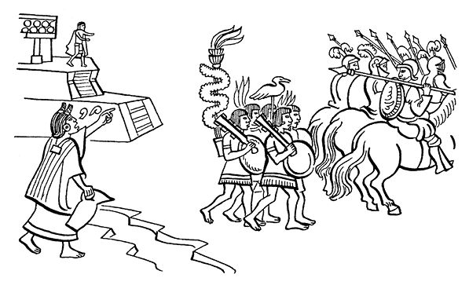
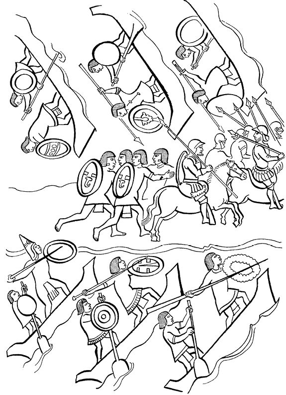
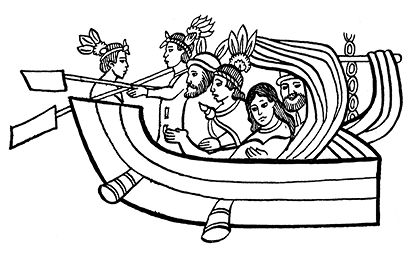

阿兹特克帝国驻华使馆
目录 |
第十章 科尔特斯归来：“痛苦之夜”
导 言
科尔特斯战胜了潘菲洛·德·纳瓦埃斯，带着数量更多的士兵返回墨西哥-特诺奇蒂特兰。萨阿贡实情提供者叙述了他所受到的“招待”。墨西哥人决定打一场埋伏战。 据萨阿贡实情提供者记述，科尔特斯一进入蒙泰古祖玛王宫便下令开炮，这是开战的命令。惨烈的战斗持续了四天四夜。 就在此期间，西班牙人将蒙泰古祖玛和伊特斯瓜乌特辛的尸体抛在湖边。正如费尔南多·德·阿尔瓦·伊斯特利尔索奇特尔所述，没人确切地知道蒙泰古祖玛是怎么死的：“据说，一个（印第安）人向他扔了一块石头，他被击中而死；但蒙泰古祖玛的臣民则认为是西班牙人杀害了他。他们用剑刺入蒙泰古祖玛的下体，将他杀死。” 据印第安人的典籍描述，一些墨西卡人组织了蒙泰古祖玛的葬礼，并对他的所作所为进行了认真评价。七天以后，西班牙人准备离开墨西哥-特诺奇蒂特兰。 那天晚上，墨西卡武士们进行了报复，史称“痛苦之夜”。纳瓦人描述了他们如何包围了正要从塔库巴堤道1逃跑的西班牙人。西班牙人最终向特奥卡尔维亚坎2方向逃脱了，在那里他们受到和平的接待。 本章还摘录了萨阿贡实情提供者所述的在墨西哥-特诺奇蒂特兰城中发生的事情：墨西卡武士胜利了，他们把从西班牙人手中夺过来的战利品全部瓜分。 本章的末尾，摘录了伊斯特利尔索奇特尔在《第十三篇记述》中为我们保存的关于这一事件的叙述，作为简短的附录。
西班牙人连夜弃城
夜幕降临后，直到午夜时分，西班牙人和特拉斯卡拉人开始密集地离开城市，西班牙人走在前面，特拉斯卡拉人紧随其后。人人身上背着利剑，密集的利剑像一面墙，紧贴每人身后。 他们身上背着浮桥木板，以便过河时把木板放在河里组成浮桥。 当时正在下雨，雨不大，毛毛细雨像是在润泽庄稼，可以说雨下得很小。 他们虽然过了特克潘特辛克、查伯特兰和阿腾奇卡尔克三条水道，但当到达米斯科阿特奇阿尔蒂特兰水道——这是第四条水道——时被发现了。3
逃跑被发现
一个取水的妇人看见了他们并立即大叫道： “墨西哥人，快来呀！你们的敌人正在渡河，马上就要逃走了！现在他们正在躲藏……” 一个站在维奇洛波奇特利神庙上的男子也喊了起来，他的声音很快便在人群中响起，所有人都听到了他的喊声： “武士们，指挥官们，墨西哥弟兄们……你们的敌人正在逃跑！快去追赶他们！快带着盾牌坐船去追赶，在陆地上要奋不顾身地追赶！” 
战斗开始
众人听到喊声，议论纷纷。不一会儿，有船的人把船预备好，准备战斗。他们奋力划船，船桨都碰到了龙骨，他们向米特兰东科前进，向马奎特拉皮克前进。 船的一面用护板加固，另一面对着敌人，向敌人扑去。这些船有的是特诺奇蒂特兰人的，有的是特拉特洛尔克人的。 另一些人步行，径直向诺诺瓦尔科挺进，向特拉克潘挺进，以图断掉敌人的后路。 在加固船上的人向西班牙人投掷投枪，投枪纷纷落下。 但是西班牙人也向墨西哥人发射帕萨多尔4和火枪。西班牙人中不少人中箭死在船的两边，也有特拉斯卡拉人中箭身亡。墨西哥人中也有中箭或被火枪击中身亡的。
托尔特卡运河上的大屠杀5
当西班牙人到达托尔特卡运河，穿过特拉尤瓦坎地方时，全军溃败，众人就像从山上摔下来，也像从悬崖上掉下去一样。无论特拉斯卡拉人、特利利乌基特佩克6还是西班牙人，无论骑马的还是步行的，都溃不成军，他们中间还有一些妇女也同样遭殃。 不一会儿河道就满是死尸，河水无法流淌。后来踩着死人的尸体就能过河去到对岸。 当他们来到佩德拉卡尔克时，又遇到另一条运河，这次他们从木浮桥上安全地通过了。 在那里他们方喘了口气，感到自己算是活了下来。 在到达波波特拉时，天色已亮，人们已经冻得发僵。远处还有战事。 刚到达波波特拉时，西班牙人发出了惨叫声，因为他们被墨西哥人团团围了起来。这时墨西哥人还活捉了不少特拉斯卡拉人，也杀死了不少西班牙人。 不少墨西哥人也丢了性命，多数为特拉特洛尔克人。到处横尸遍野。 墨西哥人一直把西班牙人追到了特拉克潘，即塔库巴。 也有的人被赶到特里尔尤坎、索索特勒和索索科特拉。这最后的地方就是蒙泰古祖玛的儿子奇马尔波波卡蒙难的地方，他是被弓弩射中而亡的。 特潘内卡的王子特拉尔特卡特辛也在那里受了伤，最后罹难。 特拉尔特卡特辛就是给西班牙人做向导、为他们指路的那个人。  西班牙人及其同盟者经特拉克潘（塔库巴）逃跑（佛罗伦萨抄本）
西班牙人逃到特奥卡尔维亚坎
西班牙人渡过一条叫作特普索拉特尔的小河，到了河对岸，向前便到了一个叫作阿古埃克的地方。他们在一个叫作奥通卡尔普尔科7的城堡停了下来。城堡四周用原木筑成。西班牙人躲进里面休整，恢复元气。 特奥卡尔维亚坎人的首领前来欢迎他们。 首领有个高贵的名字：奥托米。他迎上前来，送给西班牙人的食品有白饼、活母鸡、炖好的或烤好的母鸡、鸡蛋，还有一些仙人掌果。所有这些食品都呈献在西班牙队长面前。 奥托米对他们说： “我们的大人，你们辛苦了，你们受惊了！愿神收留你们。你们就在这里安顿下来，喘口气吧。” 这时马林切说道： “我的先生们，我们的队长有话要说： 诸位来自何方？家住何地？” 他们答道： “我们的大人，我们来自特奥卡尔维亚坎，我们就是那里人。” 马林切答道： “太好了，我们很感激你们。明天或后天我们到那里过夜。”
墨西哥人在特诺奇蒂特兰缴获的战利品
拂晓降临，不久太阳出来了，天已大亮。托尔特卡运河中所有的特拉斯卡拉人、森波阿拉人和西班牙人都被运到了佩德拉卡尔克和米克东科。 他们是用独木舟运来的，然后被当地人扔在有灯芯草的地方，他们全都被摊在了灯芯草上。 还有一些（死去的）女人被赤身裸体地扔在灯芯草上，全身焦黄。 这些当地的死者都被扒光了衣服，身上的物品被抢光；他们被彻底抛弃，谁也不去看他们一眼。 但是死去的西班牙人被一排排堆放在另外的地方。他们的身体白皙，白得像尖尖的甘蔗幼苗，又似龙舌兰的嫩芽。 人们还把“大鹿”拉过来，“大鹿”就是驮西班牙人的马。 他们把马背上驮的一切东西都归为己有。如果有谁看中了什么物件，便马上把它卸下来，据为己有，背回自己家。 哪里死人越多，被抢走的东西也越多。这些东西都是他们（西班牙人）因害怕而丢弃的。武器也被拿走，如大炮、火绳枪、利剑。除火绳枪和利剑外所有被丢弃在低地的物件都被捡了回来，如投枪、马鞍、铁箭和铁箭头。 他们还捡回了很多铁头盔、铁盔甲、铁胸甲、皮盾牌、金属盾牌和木盾牌。 另外还捡回不少金条、金饼、金沙和镶金绿宝石。 所有这些都是用手或脚从水中一件一件挑拣出来的。走在前边的西班牙人都逃走了，但后面的人都倒在了水里。8
阿尔瓦·伊斯特利尔索奇特尔的记述
科尔特斯返回墨西哥，这之前先进入特斯科科城。几名武士前来迎接他们，因为奈查瓦尔克尤特尔国王的几个婚生儿子被大臣们藏了起来，其他儿子都关在墨西哥做了人质。施洗者圣约翰纪念日这天科尔特斯带着整个的西班牙军队、特拉斯卡拉盟友以及其他援军没费一枪一炮便进入了墨西哥。 墨西哥人和其他人尽管给他们提供了一切所需，但看到西班牙人根本没有撤出都城的意思，也不想释放被关押的国王，于是便在科尔特斯进城后的某一天集合起来与西班牙人作战。战斗持续了七天。 交战的第三天，蒙泰古祖玛国王看到臣民们已经决心战斗到底，便登上高地，谴责他们，而他的臣民们则对他恶言相报，骂他懦弱，说他是祖国的敌人并举起武器威胁他。据说此时有人向他扔石头，以致他致命身亡。也有臣民说是西班牙人用剑刺入他的下体将他杀死。 第七天，几次大战之后西班牙人和他们的盟军特拉斯卡拉人、瓦索辛卡人和其他部族的人沿着通向特拉克潘的大道落荒而逃。出逃前他们杀死了国王卡卡马特辛9和他的三个姊妹。据堂阿隆索·阿萨亚卡特尔和一些亲临现场的当地人说，国王的两个兄弟并没有死，他们在西班牙人撤退时在特拉克对面的山丘上杀死了很多西班牙人和他们的盟友，兄弟二人后来从小山返回到特拉斯卡拉。10  1 塔库巴堤道是印第安人从特诺奇蒂特兰到湖对岸的三条大道之一。 2 特奥卡尔维亚坎（Teocalhueyacan）是奥托米印第安人的一个村落。奥托米人是墨西哥人的敌人。 3 参照阿方索·卡索博士一篇题为“墨西哥城及特拉特洛尔克城的古代街区”（《墨西哥历史学会纪念文集》，第15卷，第1册，1956年1-3月）的文章，这四条水道的名称可以确认，并且可以找到这些水道的大概位置：特克潘特辛克“很可能通向塔库巴堤道……”，“也许就是后来的圣胡安·德·雷特兰水道”；查伯特兰位于同名街区之内，“1959年该街区很可能位于今天墨西哥城的阿拉梅达街区附近”；阿腾奇卡尔克“位于螃蟹出没最多的河岸之上”；而米斯科阿特奇阿尔蒂特兰则“位于米克斯克阿特尔瞭望台附近”。最后这两条水道“应该位于现在墨西哥城的圣胡安·德·雷特兰街与萨尔科街之间的位置”。——原注 4 帕萨多尔是“箭头十分尖锐的箭矢，用弩发射”。——原注 5 这是在撤退时发生的大灾难，堂费尔南多·拉米雷斯认为该运河位于圣费尔南多教堂和马尔提莱斯（也可能在圣伊伯里克）隐修院附近。——原注 6 如前所述，这两个印第安族群都是西班牙人的同盟军。 7 奥通卡尔普尔科（Otoncalpulco），位于墨西哥谷地另一名叫奥托米印第安部落的城堡。 8 萨阿贡实情提供者，《佛罗伦萨抄本》，第12卷，第24、25章（卡里巴依译本）。——原注 9 卡卡马特辛是特斯科科的国王。 10 见费尔南多·德·阿尔瓦·伊斯特利尔索奇特尔，《第十三篇记述》，“西班牙人的到达和福音戒律之始”。——原注 |
|---|